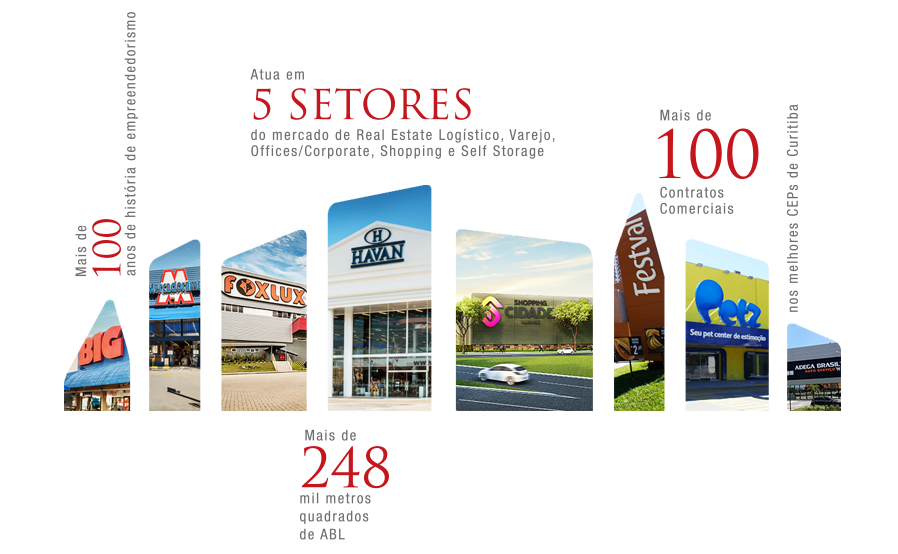
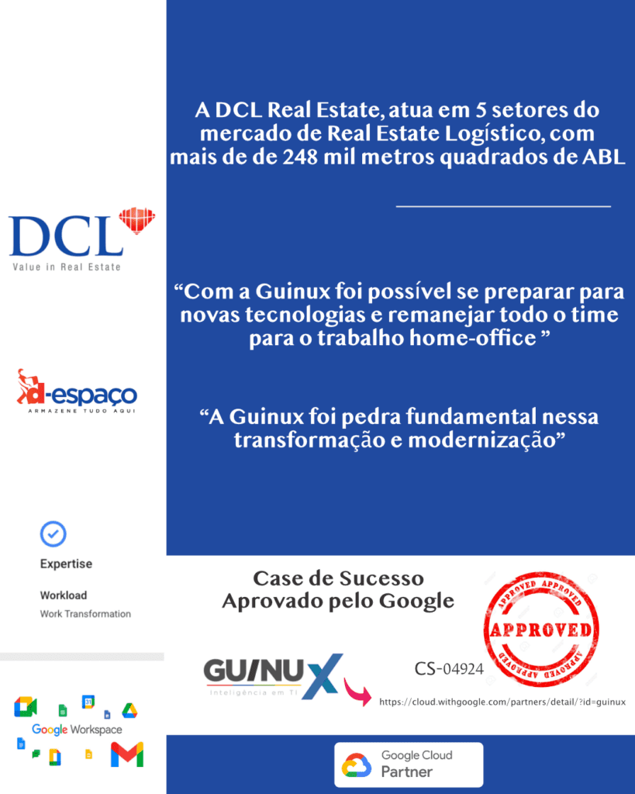
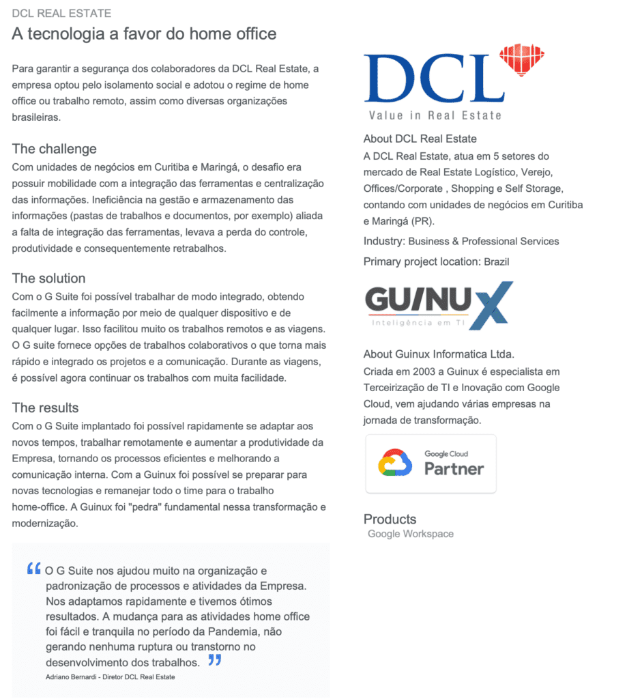

A DCL Real Estate, atua em 5 setores do
mercado de Real Estate Logístico, com
mais de de 248 mil metros quadrados de ABL

A Guinux foi “pedra” fundamental nessa transformação e modernização. Com sua expertise foi possível fornecer as melhores soluções à Empresa, ambientes mais seguros e com excelência no atendimento. O senso de urgência da Guinux é impressionante. Todos os usuários são rapidamente atendidos. Nosso foco mudou complementamente desde 2015. Hoje pensamos no ‘amanhã’.
Desafio: Com unidades de negócios em Curitiba e Maringá, o desafio era possuir mobilidade com a integração das ferramentas e centralização das informações. Em vários momentos enfrentamos
problemas em virtude das informações descentralizadas, além das dificuldades, principalmente por parte dos gestores, em trabalhar remotamente. Essa ineficiência na gestão e armazenamento das informações (pastas de trabalhos e documentos, por exemplo) aliada a falta de integração das ferramentas, levava a perda do controle, produtividade e consequentemente retrabalhos.
A solução: Com o Google Worksapce foi possível trabalhar de modo integrado, obtendo facilmente a informação por meio de qualquer dispositivo e de qualquer lugar. Isso facilitou muito os trabalhos remotos e as viagens. O G suite fornece opções de trabalhos colaborativos o que torna mais rápido e integrado os projetos e a comunicação. Durante as viagens, é possível agora continuar os trabalhos mesmo quando o acesso a uma rede de dados não está acessível.
Resultado: Com o Google Workspace implantado foi possível rapidamente se adaptar aos novos tempos, trabalhar remotamente e aumentar a produtividade da Empresa, tornando os processos eficientes e melhorando a comunicação interna. Com o Guinux foi possível se preparar para novas tecnologias e remanejar todo o time para o trabalho home-office.
Palavra do Diretor: “O Google Workspace nos ajudou muito na organização e padronização de processos e atividades da Empresa. Nos adaptamos rapidamente e tivemos ótimos resultados. A mudança para as atividades home office foi fácil e tranquila no período da Pandemia, não gerando nenhuma ruptura ou transtorno no desenvolvimento dos trabalhos.”
Desde 2015 a DCL Real Estate e D-Espaço contam com a Gestão de TI da Guinux, além de oferecer todo apoio tecnológico também contribuímos no seu processo de transformação digital, com o caso de sucesso aprovado e homologado pelo Google.


Confira em: https://cloud.withgoogle.com/partners/detail/?id=guinux